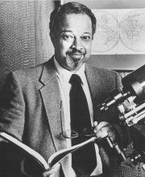

Please note: the AAS Obituaries are temporarily being hosted on this website while their full content is being ingested into the PubPub publishing platform newly adopted by the Bulletin of the American Astronomical Society. When the migration is complete, your existing links will take you to the final, migrated content. Contact peter.williams@aas.org with any questions.
Arthur B. C. Walker (1936-2001)
Solar Physicist Arthur B. C. Walker, Professor of Physics and Applied Physics at Stanford University and a mentor of women and minority students, died at his home on 29 April 2001 after a lengthy battle with cancer.
Art Walker was born in Cleveland on 24 August 1936, the only child of Cuthbert and Hilda Walker. In 1941 his family moved to New York City. From an early age Art developed an interest in science. Following the footsteps of Albert Einstein—the hero of most of us young adults in those days—Art decided to pursue science after being admitted to Bronx High School of Science. He faced many obvious obstacles including attempts by a teacher to discourage him from being a scientist. With his mother's support, and inspired by his other role model, Benjamin Banneker—the first African American man of science in the United States—Art earned his bachelor degree in physics with honors from Case Western Institute of Technology in 1957. He went on to achieve Master's (1958) and doctorate (1962) degrees at the University of Illinois. Art was elected to membership of Tau Beta Pi, Sigma Xi and Sigma Pi Phi fraternity for black professionals.
Art joined the US Air Force in 1962. While on active duty, he participated in the development of instruments for a rocket-launched satellite investigation of the Van Allen Belts. After completion of his military service in 1965, he joined the Space Physics laboratory of the Aerospace Corporation. There he began his long career of investigation of the solar atmosphere using rocket-launched instruments, initially at ultraviolet wavelengths and later with X-rays. He came to Stanford as a professor in the department of Applied Physics in 1974 and by 1991 he held a joint appointment in the Physics and Applied Physics departments.
During his whole career at Stanford, Art was an active member of the Center for space Science and Astrophysics and the Astronomy Program. He chaired the latter program from 1977 until 1980. Art was in charge of the student observatory located in the foothills adjacent to the campus and taught popular observational astronomy courses at different academic levels. But his most lasting contribution to academic life at Stanford was his mentoring of graduate students. A majority of his thirteen graduate students were from sectors of our society that are under-represented in science, namely women and African-Americans. Among these was Sally Ride, the first female U.S. astronaut.
Art's mentoring and acting as role model extended beyond physics and astronomy. He was a leader of the African American community at Stanford and the longest serving member of the advisory committee for the Afro-American studies program. He served as a successful role model for many of the young African-American assistant professors including Condoleeza Rice.
Art Walker had remarkable ability in administering committees and their work. His clear thinking and calm, deliberate approach allowed him to find ways of solving problems amid conflicting views. This ability was recognized at Stanford soon after his arrival when he was appointed Associate Dean of Graduate Studies. He served on many other university and departmental committees, including acting as ombudsperson for the Physics Department. This gift of his was recognized outside Stanford as well. Throughout his career, Art led or served on innumerable NASA, NSF, and NAS committees. The Walker committee was instrumental in the success of the GONG project. That same committee's recommendations led to the unification of the solar observatories at Kitt Peak and Sacramento Peak into a National Solar Observatory.
President Ronald Reagan selected Art Walker, along with such luminaries as Neil Armstrong, Richard Feynman and Sally Ride, to serve on the most important committee in the history of the US space program, the commission investigating the space shuttle Challenger explosion. NASA recognized these services during a celebration of Art's work at Stanford in September 2000. At that time, David Bohlin and William Wagner surprised Art with the award of NASA's Distinguished Public Service Medal in recognition of his "four decades of distinguished scholarship, achievements in experimental space sciences and extensive service to NASA and the nation in innumerable advisory and review boards."
Art Walker thrived in use of novel techniques in astronomical observation. Soon after his arrival at Stanford he recognized the astronomical potential of the multi-layer thin films developed by Troy Barbee, then at the Material Sciences Department of Stanford, for a normal incident X-ray telescope. In collaboration with Barbee, and others, and with the assistance of graduate and sometimes undergraduate students at Stanford, Walker constructed and launched successive rocket payloads to carry out observations of the Sun's corona. The result of the first such observation, launched in 1987, adorned the cover of Science Magazine in September 1988. In 1991 the group launched an instrument with 14 telescopes, and in 1994 another with 19 telescopes, each telescope tuned to different narrow X-ray bands. The same technology was later used for the instruments on board the CHANDRA X-ray observatory. Just before his untimely death, Art was initiating a program of X-ray spectroscopy using new technology for the detection of dark matter. That technique was developed by Professor Blas Cabrara of Stanford's Physics Department.
Art always appeared calm and had a historical anecdote for each occasion. But he was forceful and did not shrink from facing controversy. Art was a strong protector of his territory, particularly when it came to affairs involving his teaching and his graduate students. He did not shrink from responsibilities and taking new tasks. With an optimistic confidence, Art could always take on one more task, from as small as writing a letter to as time consuming as serving on an important committee. One of my most endearing images of Art is seeing him walking to his car, often late past dinnertime, with a briefcase and a mid-size suitcase stuffed with work which he expected to complete that night. He was a true gentleman who cared for the well being of others even when this caring and its results did not enhance his professional standing. Art was a loving husband to his wife, Victoria and their surviving three children and four grandchildren. He enjoyed growing camellias and roses.
Photograph courtesy of Victoria Walker
Obituary written by: Vahé Petrosian (Stanford University)
BAAS Citation: BAAS, 2001, 33, 1586
SAO/NASA ADS Bibcode: 2001BAAS...33.1586P